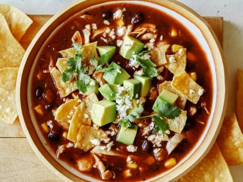

Go back to home
Chicken Tortilla Soup
This dish is one of the best available in our restaurant. Tortilla, a traditional Aztec flatbread which its taste and look have been improved by Mexican generations, now its in the market and has a huge value in the culture of Mexico and of course, in the food taste. Feel the broth in your palate. You're not going to regret it.

Ingredients
- 1 tablespoon olive oil
- 1 medium onion, chopped
- 3 gloves garlic, minced
- 2 medium avocados, sliced
- 1 (4 ounce) can chopped green chili peppers
- 2 tablespoons chopped green onions
How we do it:
- Heat oil in a stockpot over medium heat
- Add onion and garlic
- Stir in crushed tomatoes, condensed broth, water, chili powder, and oregano
- Bring them to a boil
- Stir in black beans, cooked chicken, corn and chili peppers
- Simmer for 10 minutes
- Ladle soup into individual serving bowls, and top with crushed tortilla chips
See previous recipe
See next recipe